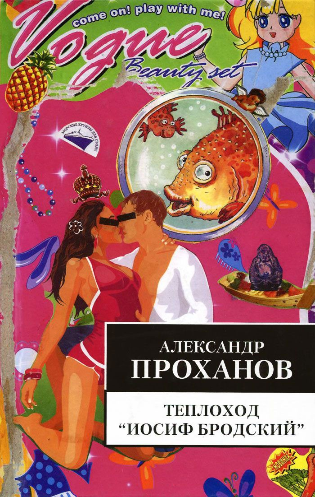
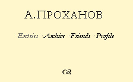

Александр Проханов • Теплоход «Иосиф Бродский» • вне серий • 13.05.2006

Вышел в свет столь долгожданный и уже широко обсужденный (особенно в интернете) роман А.А. Проханова “Теплоход “Иосиф Бродский”.
Новый роман Александра Проханова — своего рода продолжение скандального «Политолога». Главные действующие лица романа — российская элита, легко узнаваемая за ироничными псевдонимами. На теплоходе «Иосиф Бродский», на котором плывет избранное общество, отмечающее свадьбу угольного магната Франца Малютки и светской львицы Луизы Кипчак, по всем каютам установлены видеокамеры, снимающий фильм для телеканала, специализирующийся на случках в прямом эфире. Канун грядущих президентских выборов. Действующий Президент отказывается «идти на третий срок», и его ближайший помощник готовит переворот…
Пресса и контекст
Бродский, теплоход, политика… В общем, новая книга А. А. Проханова (26.03.2006)

Начиная с сегодняшнего дня по адресу prohanov.livejournal.com в Живом Журнале можно будет знакомиться с отдельными главами из новой книги А. А. Проханова «Теплоход “Иосиф Бродский”». Новая книга Александра Андреевича — продолжение «президентской эпопеи», начатой им еще в романе «Господин Гексоген», однако на сей раз автор берет на себя смелость не просто представить перед нами наше прошлое, пусть и в уникальном виде околодетективного политического романа, но пытается заглянуть в не столь отдаленное будущее России, представив себе ситуацию вокруг президентских выборов 2008 года. Книга — своего рода развитие «Политолога», напечатанного нашим издательством, основная сюжетная линия которого выстраивалась вокруг «придворных» и «оппозиционных» интриг сегодняшнего политического истеблишмента России.
Главное действующее лицо нового романа А. Проханова — этакий современный «герой нашего времени» — глава администрации президента, серый кардинал и теневой министр в одном лице, плетущий новую сеть сложных интриг с целью укрепить и распространить свою власть далее, нежели это позволяют установленные Конституцией сроки полномочий президента.
Роман выдвинут на соискание премии «Национальный бестселлер» от издательства «Ультра.Культура».
Для справки:
Александр Андреевич Проханов родился 26 февраля 1938 года в Тбилиси. В 1960 году окончил Московский авиационный институт им. С. Орджоникидзе. Работал инженером, затем лесником в Карелии и Подмосковье. В 1960–1970 гг. — сотрудник газеты «Правда», с конца 1960-х гг. — корреспондент «Литературной газеты». Работал в Афганистане, Никарагуа, Кампучии, Анголе, Эфиопии и других «горячих точках». В 1971 г. издал свои первые художественно-публицистические книги «Иду в путь мой» и «Письма о деревне». В 1972 г. был принят в Союз Писателей СССР. Автор более 30 повестей, романов и сборников публицистических статей. В 1989–1990 гг. — главный редактор журнала «Советская литература». С декабря 1990 г. — главный редактор газеты «День». После ее закрытия в октябре 1993 года — главный редактор газеты «Завтра».
Презентация и немного спиритизма (16.05.2006)
Сегодня вечером в подвал «ПирОГов на Никольской» пришли поклонники, соратники и критики: Александр Проханов, издательство «Ультра.Культура» и журнал Rolling Stone представляли новый роман писателя — Теплоход “Иосиф Бродский”. Вел вечер главный редактор издательства Илья Кормильцев. Перед гостями и писателем говорили добрые, остроумные и признательные слова Дмитрий Быков, Владимир Бондаренко, Юрий Мамлеев, Станислав Белковский и другие.
Александр Проханов немного рассказал о книге и поделился впечатлениями о встрече с прототипом главной героини романа (она носит выразительное имя Луиза Кипчак), результатом которой стало интервью с Ксенией Собчак, которое будет опубликовано в ближайшем номере Rolling Stone.
Вечер оживляли не только веселые вопросы гостей («А х… Иосиф Бродский?» — «А х… нет?»), но и гадание «на Бродском». Гости запускали руку в ящик со свернутыми в трубочки бумажками со стихами Поэта, а Писатель толковал попавшиеся фрагменты всем желающим. Иногда, толкование, впрочем, и не требовалось: в зале, пропитанном энергетикой социалистического сюрреализмf, явно витал мудрый дух Бродского, раздававший всем по заслугам. Владимиру Бондаренко досталось: «Либо нас перережут цветные. / Либо мы их сошлем в иные / миры. Вернемся в свои пивные. / Но то и другое — не христианство», а Станиславу Белковскому: «Русский орел, потеряв корону, / напоминает сейчас ворону. / Его, горделивый недавно, клекот / теперь превратился в картавый рокот». А самого Писателя Поэт предупредил: «Не доверяй отраженью. Переплывай на ту / сторону только на сбитом тобою самим плоту. / Знай, что отблеск костра ночью на берегу, / вниз по реке скользя, выдаст тебя врагу».
Александр Проханов. Теплоход «Иосиф Бродский» (KMnews, 08.06.2006)
Российская Федерация, канун президентских выборов. Президент отказывается баллотироваться на третий срок. На его место масоны, американские агенты и прочие предатели выдвигают дутого лидера, прикрываясь которым они собираются окончательно расколоть и изглодать павшую Империю. Но такая перспектива не устраивает главу администрации президента и узкий кружок его единомышленников, составляющих последний оплот целостности и мощи России. Тем более что новые хозяева страны готовят им всем Гаагский трибунал и мучительную гибель.
Конфликт обещает окончательно оформиться на борту огромного белого теплохода под названием «Иосиф Бродский», направляющегося из Москвы в Петербург. На теплоходе состоится блестящая свадьба светской дамы Луизы Кипчак и угольного магната Франца Малютки. В качестве гостей приглашена вся элита страны, включая опального главу администрации и его врагов – кандидата в президенты с его жидомасонской камарильей.
Пока пассажиры русского «Титаника» – политики, олигархи, звезды шоу-бизнеса, телеюмористы, модели – предаются разврату, чревоугодию и сладкой праздности, пока скрытые камеры, установленные в каютах, снимают про них порнографическое реалити-шоу, в рядах гостей свадьбы века вынашиваются два тайных плана. Первый принадлежит злокозненной масонской клике и состоит в том, чтобы извести население России, а на его месте поселить генетически модифицированных, выращенных на заводах биороботов. Второй зреет под сердцем у вдохновляемого божьим ангелом Есаула, и истинная суть этого тайного пока не ясна даже ему самому…
Долгожданный новый роман Александра Проханова потрясает до глубины души. «Теплоход “Иосиф Бродский”» – это одна большая шестисот страничная босхианская фантасмагория, в которой с картины сладкой жизни сибаритов из высшего общества и сурового быта воркутинских шахтеров густо перемешаны с адскими видениями. Книга полна шедевров вроде усов Михалкова, шляпы Боярского и лысины Жванецкого, приглашенных на теплоход в качестве гостей отдельно от своих обладателей, или сценки ночной встречи президента Буша с Кондолизой Райс: она играет на рояле Шопена, а он пьет виски и кидает в нее хлебным мякишем. После пары часов такого чтения чувствуешь, что у тебя со ржавым скрежетом приоткрывается такое же третье лобное око, как у Василия Есаула.
В персонажах романа хорошо угадываются всем известные личности. С опознанием Луизы Кипчак, ведущей эротической телепрограммы «Взасос», страшной колдуньи Толстовой-Кац, президента Порфирия с выпуклыми бледно-голубыми глазами и модельера Словозайцева, проблем не возникает. А вот мнения насчет того, кто прототип Есаула, расходятся. По одной версии, это замглавы администрации президента Владислав Сурков. Сам Проханов эту точку зрения не разделяет и говорит, что Есаул – это плод фантазии и собирательный образ, но, если уж на то пошло, он больше похож Сечина, чем на Суркова.
Но кем бы ни оказался Есаул на самом деле, и какими бы пышными, барочными образами, феерией красок и буйной фантазией ни поражал фирменный стиль главного редактора газеты «Завтра», сила прохановской политико-галлюцинаторной феерии совсем в другом.
Из-за недостатка достоверной информации о жизни членов правительства уже давно пышным цветом цветет политическая мифология. Вызывающая роскошь и разнузданность поведения так называемой элиты давно породили жанр баек про обитателей Рублевки. Тема грядущих третьего президентского срока давно будоражит политически ангажированные умы – уже все прочитали «2008» Доренко и все ужаснулись.
Роман Проханова, однако, дает фору не только Доренко, но и Мистеру Паркеру с Оксаной Робски, а кое-где – даже Сорокину с «Голубым салом». «Теплоход “Иосиф Бродский”» – это главный роман путинской эпохи, энциклопедия общественно-политической жизни начала двадцать первого века, вместившая в себя все разнообразие наметившихся в последние годы тенденций.
http://www.km.ru/magazin/view.asp?id=DF5809C865834F7B8DB32559A1F42A69
Живой. Ужасы жути (Виктор Топоров, ВЗГЛЯД, 14.07.2006)
Я на пароходе «Фридрих Энгельс», ну а в голове – такая ересь!» – написал знаменитый советский поэт – и тут же, по требованию придирчивого цензора, переправил: «Я на пароходе «Маяковский», а в душе – Есенина березки!»
Он же, впрочем, утверждал в пьяном кураже, будто его поэма «Братская ГЭС» на самом деле должна была бы называться «Бродская ГЭС».
Но для того чтобы спустить на воду пароход «Иосиф Бродский» (с есенинскими березками столь же контрастно, пусть и столь же неточно рифмующийся), понадобились еще сорок лет. Понадобились крушение СССР, упразднение цензуры, «возвращение запрещенной литературы», понадобились два путча, два ельцинских срока и два, без малого, путинских. Понадобилась, наконец, воистину Валтасарова формула – 2008.
Главный редактор газеты «Завтра», лауреат премии «Национальный бестселлер» и популярное «лицо из ящика» Александр Проханов опубликовал в издательстве «Ультра. Культура» фантасмагорический роман «Теплоход «Иосиф Бродский». Воззвав к «эгрегору», он пригвоздил к позорному столбу «жругра» – и, если не ошибаюсь, впервые в истории отечественной словесности сознательно выступил в жанре развернутой автопародии.
Кто-нибудь, впрочем, наверняка скажет, что автопародия получилась у Проханова непроизвольно, что ничего, кроме автопародий, он никогда и не писал, – но это, поверьте, не так!
Глава президентской администрации по фамилии Есаул узнает от американского посла Киршбоу страшное: США уговорили президента России не идти на третий срок в обмен на гарантии личной неприкосновенности и заранее украденные у народа пять миллиардов долларов. Президентом, по американскому замыслу, должен стать Касьянов – в романе его зовут Куприяновым.
Есаул в ужасе: как патриот он понимает, что это означает окончательную гибель России; кроме того, как частному лицу ему дали понять, что на «ближний круг» обещанная неприкосновенность не распространяется: всю шайку-лейку неминуемо ждет Гаагский трибунал.
Но Есаул и сам не прост: время от времени у него открывается во лбу третий глаз. В буквальном смысле.
Заручившись поддержкой самых преданных (у которых та же двойственная мотивация), он затевает контрзаговор, а для начала принимает участие в свадебном круизе Москва – Петербург на теплоходе «Иосиф Бродский». Венчаются светская львица Луиза Кипчак и единственный генетически русский миллиардер (а потому и не олигарх) Франц Малютка. На борту вся проамериканская знать, вся эстрадно-литературная шваль и американский посол в придачу. Со временем ждут сюда и вероломного президента России.
А пока суд да дело, стоят Содом и Гоморра с сильной примесью ненаучной фантастики: тр…т все, что шевелится, включая собак и русалок; русалочьей же икрой и прочими деликатесами питаются; проводят сатанинские «предвыборные дебаты», конкурс красоты «мисс Бродская» и гадания по однотомнику поэта. Который хоть и был жидом (Есаул привык называть вещи своими именами), но из тех жидов, на которых держится земля. Земля Русская в том числе.
«…Видите ли, Иосиф Бродский вездесущ и столик. Он был в далеком прошлом, существует ныне во множестве воплощений и никогда не исчезнет, какие бы сюрпризы ни преподносила нам история. Человечество, с момента зарождения, двигалось от одного Иосифа Бродского к другому, которые являлись в самые переломные, драматические периоды, не позволяли истории уклониться от божественного промысла. «Иосиф» на арамейском языке – «подающий знак». Иосиф Бродский – это тот, кто подает человечеству знаки, уводя за собой сбившуюся с пути историю. Таким был Иосиф, сын Иакова, проданный братьями в Египет, что предопределило появление Моисея, великий «исход», скрижали, скинию и весь иудаизм как неизбежный путь человечества. Таким был великий историк и метафизик Иосиф Флавий, предсказавший христианство. Никто не сомневается, что святой Иосиф, в семье которого родился Христос, был такой же путеводной звездой человечества. Можно перечислять без конца. Иосиф Волоцкий, знаменитый устроитель Православной церкви. Иосиф Сталин, которого многие почитают святым. Иосиф Броз Тито, – несомненный славянский герой. Наконец, Иосиф Кобзон, чьи песни, при всей их непривлекательности и ущербности, являются «музыкой сфер» – сфер обслуживания. Иосифы Бродские есть во всех народах, на всех материках. Есть у китайцев, есть у народа майя, есть у племени зулу. Антропологи, изучающие останки австралопитеков, обнаружили у некоторых скелетов признаки Иосифа Бродского. Некоторые гипотезы утверждают, что Иосиф Бродский существовал в «дочеловеческий период», являя себя в образе динозавра. Моя же мысль, подтвержденная герменевтикой, сводится к тому, что Иосиф Бродский заявил себя уже на стадии минеральной фазы земли, в период образования гор, выделения из расплавленной магмы минералов и руд, – такие самоцветы, как топаз, изумруд, аквамарин носят признаки Иосифа Бродского. Изучая академика Зельдовича, его теорию происхождения Вселенной, можно найти намек, что «первичный взрыв» в той или иной степени связан с Иосифом Бродским. Поэтому, господа, спиритический сеанс, участниками которого вы согласились стать, соединит вас не просто с духом усопшего человека, но с космическими силами невиданной мощи, что одновременно и плодотворно и смертельно опасно. Те из вас, кто отважится испросить у Иосифа Бродского прорицание о своей судьбе, должны знать, что ответ будет содержать не относительную, но абсолютную истину, пусть и изложенную в сомнамбулической форме его бессмертных стихов…»
На погрязший в мерзости теплоход нападают «последние герои» – сначала полковник Клычков, а потом – юный нацбол. Обоих ловят и публично казнят. Их загрызает пес (как позднее выясняется, не только пес, но и сын) губернатора Русака.
Есаул, стиснув зубы, присутствует при расправе. На борту у него один-единственный помощник – капитан теплохода Яким, он же лидер движения «Нейшн». На прокурора Грустилова и думского лидера Грязнова надежда слабая, а министр обороны – и вовсе тряпка.
Ситуация усугубляется двойной и даже тройной мотивацией: чтобы сохранить президента-предателя на престоле, необходимо внушить американцам, будто он будет служить их интересам еще преданнее, чем назначенный ими «преемник». В доказательство Есаул демонстрирует послу Киршбоу парад чеченцев под Москвой, на который прилетают Шамиль Басаев и Усама бен Ладен, разгул «русского фашизма» (в лице Клычкова), «китайскую угрозу» и демонтаж последних ракет, сопровождаемый фольклорными плясками, – но американец остается непреклонен. Что несколько странно, потому что именно демонтажа ракет и требуют США.
Здесь у писателя концы с концами не сходятся, – возможно, намеренно – с тем чтобы показать, в какую безвыходную ситуацию попала Россия; и Проханов искусно переключает читательское внимание на все новые описания оргий, сильно смахивающие на порнофильм Прянишникова по рисункам в школьном сортире.
Тем не менее кое-что Есаулу удается: ликвидирована жаба-прорицательница Толстая-Кац, пытавшаяся извести – не ворожбой, так любовной ласкою – его самого. Загрыз собственного отца пес губернатора Прусака. С трудом, но все же поддается вербовке миллиардер Малютка. А главное, Есаул постепенно осознает, что за масонским и мондиалистским заговором Киршбоу, Куприянова и Добровольского скрывается нечто еще более жуткое: сатанисты-экспериментаторы во главе с модельером Словозайцевым (он же, естественно, Савл Зальцер), колдуя над человеческим геномом, готовятся извести русский народ на корню во исполнение воли своего духовного предводителя Лейбы Бронштейна, он же Лев Троцкий. Модельер – всего лишь пророк его, а дьявольское оружие – куриные окорочка!
«…Я принял образцы куриного мяса и, используя открытые мною методики и новейшее оборудование, обнаружил в куриных тканях имплантированные, чужеродные клетки. В них содержались человеческие гены, которые мощно воздействуют на тех, кто питается этим мясом. Не стану обременять тебя научными формулами, но если говорить на понятном языке, то в пресловутых «окорочках Буша» оказались «клетки уныния», «клетки бесплодия», «клетки суицида», «клетки безволия». Попадая в организм человека, они отравляют его живую ткань и порождают духовный упадок, чувство абсурда, парализуют жизненную волю, приводя у женщин к бесплодию, а у мужчин к импотенции. Блокируют в женщине материнский инстинкт, а в мужчине – инстинкт отца. Люди, употребляющие в пищу это генетически отравленное мясо, гибнут физически и духовно. Желая погасить невыносимое чувство тоски, они начинают безудержно пить, принимать наркотики, впадают в различные формы социальных безумий и фобий. К ним является тот, кого называют «бесом уныния». Они впадают в этот тяжкий грех, который ведет к разрушению всех жизненных основ и в конечном счете к самоубийству…»
Так объясняет Есаулу старец Евлампий в пустыни, к которой пришвартовывается теплоход. Объясняет, пока пассажиры уестествляют друг друга и монахов, а зловещий Словозайцев пытается воскресить Троцкого. Но ничего не выходит, пока жив Евлампий! А когда его забивают камнями, ничего не выходит, потому что Есаул не дает надругаться над мертвым телом. И теплоход идет, чувствуется, уже в последнее плавание.
На борт прибывает президент-предатель и объявляет о том, что не пойдет на третий срок. И тут же Есаул проводит давно вынашиваемую в недрах «Иосифа Бродского» спецоперацию.
Вместе с Якимом и Малюткой (последнему показана в записи ночь любви его невесты с кандидатом в президенты) последовательно ликвидирует несколько мерзавцев и мерзавок, включая Куприянова, Славозайцева и самого президента. После чего пускает в ход свое тайное оружие – президентского двойника, который и объявляет о введении чрезвычайного положения, запрете фашиствующих организаций, начиная с газеты «Завтра», и продлении собственных полномочий на неопределенный срок.
Впрочем, Есаул держит президентского двойника на коротком поводке и под постоянным прицелом – да и не мудрено: это серийный убийца-педофил по кличке Сластена. Есаул вскоре усыпит его, а сам станет всенародно избранным президентом. Американцам, кстати, уже объявлено, что случайно нашлась тысчонка не уничтоженных ракет, и они будут помощнее прежних. Великие потрясения заканчиваются, начинается великая Россия.
Луиза Кипчак умирает, искусав себя в приступе перманентной нимфомании; ее мать Стеклярусову живьем подхоранивают к мужу; находящийся в розыске писатель Проханов неторопливо прогуливается по Питеру с Иосифом Бродским (как Синявский – с Пушкиным) и показывает покойному поэту, где именно (в Зимнем саду «Астории») ему присудили премию за роман «Господин Гексоген»… А потом неторопливо приходит на Васильевский остров, но не умереть – да и зачем ему теперь, когда все срослось, умирать? – а воздать почести своему вечному антагонисту и тайному двойнику.
Тот же Бродский писал, что тирания способствует расцвету метафоры. В романе у Проханова неистовствуют гиперболы, так что у нас все-таки, наверное, не совсем тирания.
Не тирания, а что?
Этого, похоже, не знает и сам писатель. Последовательно разочаровавшись во всех до единого «спасителях Земли Русской» (у каждого из которых в разные годы взял для своей газеты как минимум по одному восторженно-велеречивому интервью), он синтезирует нового Сталина по принципу: «Я тебя слепила из того, что было», – и получается у него, естественно, ахинея. И он сам понимает это, не может не понимать, – и смеется уже не над Городничим, а над собой.
Проханов – живой писатель, жутковатый, но живой; и чем дальше он, пусть и опираясь на реалии, отрывается от реальности, чем безвкусней, чем низкопробней, чем вопиющей становится его пародийное визионерство, тем очевиднее чуткому читателю: так, как Проханов, описывать современную действительность нельзя. Но по-другому – нельзя тем более.
http://www.vz.ru/columns/2006/7/14/38282.html
Без масок (Станислав Яковлев, nazlobu.ru, 18.07.2006)
Я знаю, что самый короткий путь вызвать ненависть собеседника – это начать по личной инициативе пересказывать ему содержание книги, фильма или собственного сна. Но как бы то ни было, позвольте осмелиться.
Нынешний пророк “Пятой империи” –увидевший в Путине радугу и чуть ли не Ангела (с большой буквы “А”) – Александр Андреевич Проханов, незадолго до этого случившегося с ним несчастья, написал убийственный для нынешней власти роман – “Теплоход “Иосиф Бродский”.
Если Вы не знали, с какой строчки начинать меня ненавидеть, то можете начать с этой, ибо я попытаюсь вкратце пересказать вам сюжет романа…
Основное действие разворачивается на великолепном теплоходе, плывущем из Москвы в Петербург. “Державник” Есаул, ослеплен своими имперскими фантазиями и лелеет в глубине души некий План (с большой буквы “П”), который якобы позволит России возродиться в ее подлинном историческом величии. Этот План у него всю дорогу пытаются выведать отвратительные “агенты либерализма”. Безуспешно. Есаул обходит все их ловушки, вербует “патриотически-настроенного” олигарха, морочит голову американскому послу, и так далее, и тому подобное.
Во время пути на теплоход несколько раз нападают (военный офицер, нацбол и др). Гламурная публика подвергает нападавших изощренным мучениям и казням. Есаул переполнен скорбью и переживаниями, но не вмешивается – ведь это может раскрыть его План.
Тем временем в Сибири, в шахте, насмерть заваливает простого мужика. Заваливает потому, что “патриотически-настроенный” олигарх не стал вкладывать деньги в модернизацию производства, чтобы приобрести бриллиантовое колье для своей невесты – Луизы Кипчак. Мужик, не дождавшись спасателей, погибает – и пробуждается в виде слепого духа чистого мщения. Он идет на зов своего уничтоженного ребенка, который был абортирован сошедшей с ума от отчаяния женой шахтера и переработан в омолаживающую сыворотку, которая, в свою очередь была введена в тело Луизы Кипчак.
В финальной сцене шахтер, исполинский монстр, восстанет из-под земли во время венчания главных героев в Исаакиевском соборе, неся смерть и “державнику” Есаулу, и всевозможному “гламуру” и вообще всем, кто так легкомысленно пренебрег его мужицкой жизнью, его семьей, его ребенком ради своих утонченных кулуарных интриг.
Мораль, полагаю, понятна.
Перед лицом народа-мстителя не будет ни эллина, ни иудея, ни нацбола, ни демократа, ни анархиста, ни государственника. Маски, как и их срывание, потеряют всякий смысл, ибо ни одна из них не превратится в щит. А значит, противостоя охранителям лакейской системы, должно стать охранителями народа. Ровно в этом, на мой взгляд, должен заключаться подлинный смысл и стержневой принцип любой подлинной Оппозиции.
Именно здесь проходит главный идеологический разлом, по обе стороны которого становятся бессмысленны нюансы партийных программ. В противном случае, в сознании обычных людей, оппозиция ничем не будет отличаться от тех, с кем она борется. Останется частью единого образа мерзости, заслуживающего лишь суда – скорого и жестокого.